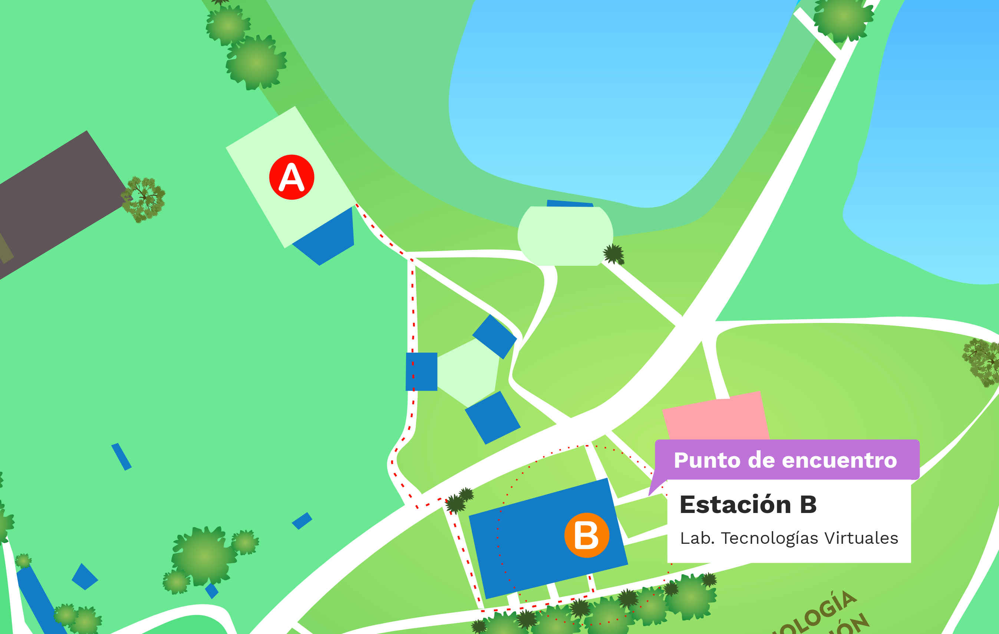

B. Tecnologías Virtuales
En este laboratorio de tecnologías virtuales, te invitamos a explorar dos fascinantes líneas de investigación: Multimedia y Electrónica.
Sumérgete en el emocionante mundo de la creatividad digital y descubre cómo la multimedia está transformando la manera en que interactuamos con la tecnología.
Además, adéntrate en el campo de la electrónica y maravíllate con las innovaciones que están dando forma al mañana.
¡Prepárate para una experiencia inmersiva y emocionante en la Estación B de nuestra Feria de Tecnología e Innovación!
Hora
9:00 - 9:40 AM